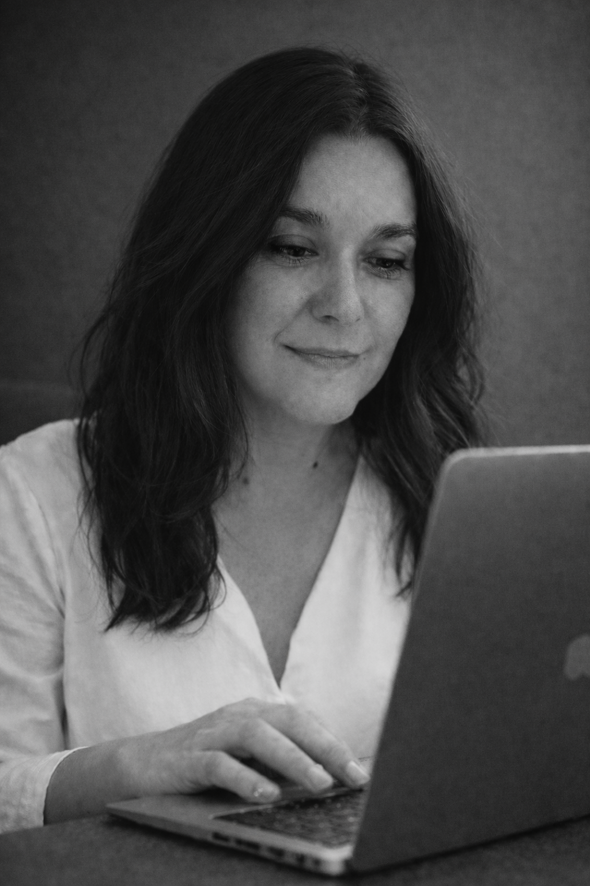
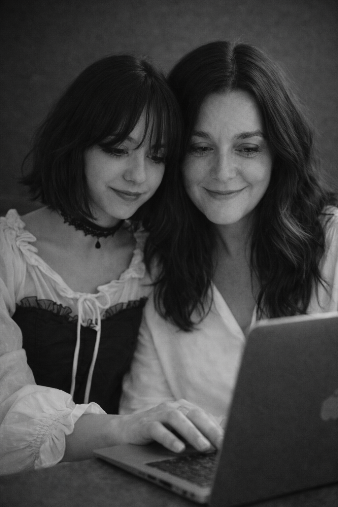

The story of a mind the system tried to slow down that ended up creating the tool it always needed.
I was told I should go to vocational training. That high school wasn’t for me. The first “no” in a very long list.
At vocational training they told me computers weren’t my thing. That my way of thinking was too “strange”, too visual, too non‑linear.
At university, I kept passing subjects, but always “the wrong way”. My way of learning didn’t match the way exams were designed.
I grew professionally as a tech consultant and multimedia specialist. I built systems for others while still carrying the feeling that I was “too much” or “not enough”.
The label arrived late, but it finally explained everything. My brain wasn’t broken. It was wired differently. The problem had never been my mind, but a system designed for linear thinkers.

Ruth: 25 years in tech and a very clear vision of an inclusive future.
Glia is not just an app. It is the survival map I used myself to succeed in a world that kept telling me I wouldn’t make it.
I poured into this engine every strategy for breaking down tasks, every fast‑reading technique and every bit of multimedia logic that helped me hack my own learning.
When you change the format of information, you discover there are no mediocre minds, only insufficient tools.

Glia was born at home, from the real need to connect learning with potential.
I created Glia for my daughter, for myself and for the thousands of students who are still hearing a “you can’t”.
The problem was never how their minds process information. The problem was always a system that didn’t know how to present it to them.
And it turns “I don’t know where to start” into a first step.
Designed from lived neurodivergent experience, not as an after‑the‑fact accommodation.
Same language, same steps, in both places. No more contradictions.
Every feature is born from something we actually went through, not from a slide deck.
If someone once told you “you’re not cut out for this”, maybe you didn’t need a different brain. Maybe you just needed a tool that spoke your language.